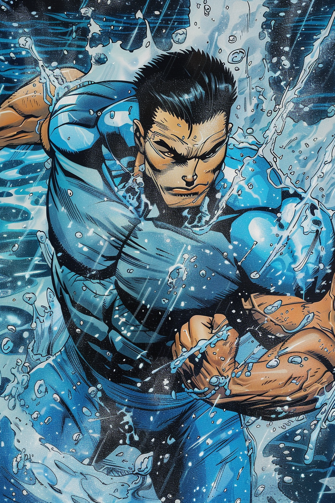

HARBORMASTER: GUARDIAN OF THE WATERWAYS

Jackson Nguyen's connection to Boston Harbor ran deeper than most. His grandfather arrived as a refugee from Vietnam in 1975, eventually saving enough to purchase a small fishing boat. The family business grew into Nguyen Marine Services, providing harbor tours, fishing charters, and boat maintenance across Boston's waterways.
From childhood, Jackson displayed an unusual affinity for water. He could predict tide changes without checking charts and navigate fog-shrouded channels when instruments failed. His father attributed this to generations of seafaring heritage; his mother suspected something more.
An engineering prodigy, Jackson earned a scholarship to MIT at sixteen. He divided his time between classes and helping with the family business, designing innovative water filtration systems and more efficient marine engines. His professors saw a brilliant future in environmental engineering; Jackson saw ways to protect the harbor that had given his family a new life.
During his sophomore year, a chemical tanker collision in the harbor threatened catastrophic contamination. While authorities scrambled to respond, Jackson took his family's fastest boat directly into the spreading slick. Witnesses reported impossible events: water moving against currents, chemical dispersants working with unnatural efficiency, and Jackson himself seemingly directing the flow of contaminated water.
The truth emerged in the aftermath. The accident had triggered latent abilities - Jackson could sense water's movement and exert limited control over it. The more urgent the situation, the stronger his connection grew. MIT's environmental science department discreetly helped him understand these powers, classifying his abilities as "hydrodynamic intuition enhancement" to avoid unwanted attention.
Jackson graduated with dual degrees in environmental and mechanical engineering, returning to the family business with new purpose. He redesigned their fleet with hidden compartments for rescue equipment and specialized systems for harbor cleanup. By day, he ran harbor tours; by night, he conducted solo patrols, stopping smugglers and cleaning pollution hotspots.
His activities caught both Beacon's and Liberty's attention. After independently tracking his movements for weeks, they approached him together. Jackson initially refused their recruitment offer, preferring his solitary work. What changed his mind was a human trafficking operation using the harbor's commercial shipping channels - a network too extensive for any individual to dismantle alone.
As Harbormaster, Jackson brings technical expertise and environmental awareness to the Minutemen. His specialized wetsuit incorporates monitoring equipment and communications technology of his own design. His abilities make him unmatched in water-based operations, able to create currents to speed allies or hinder enemies, form water barriers for protection, and even detect disturbances in the harbor from miles away.
The harbor serves as his intelligence network. Through subtle changes in water movement, he can track vessel traffic throughout Boston's waterways. His marine business provides legitimate access to shipping information and dock activities, making him invaluable for monitoring illegal maritime operations.
When not on official missions, Jackson continues his environmental work. He's established water quality monitoring stations throughout the harbor and developed nanofiltration systems to address persistent pollutants. Few connect the quiet engineer with the water-controlling figure who's rescued dozens of capsized boaters and foiled multiple smuggling operations.
Jackson's relationship with the team remains somewhat reserved. He's most comfortable working alongside Beacon, whose tactical approach matches his methodical nature. With Liberty, he shares a deep commitment to protecting the vulnerable but sometimes questions her confrontational methods. His partnership with Greenway has produced innovative bio-remediation techniques for contaminated waterways.
"Water finds its own path," Jackson often remarks during planning sessions. "Sometimes we need to guide it; sometimes we need to follow where it leads."